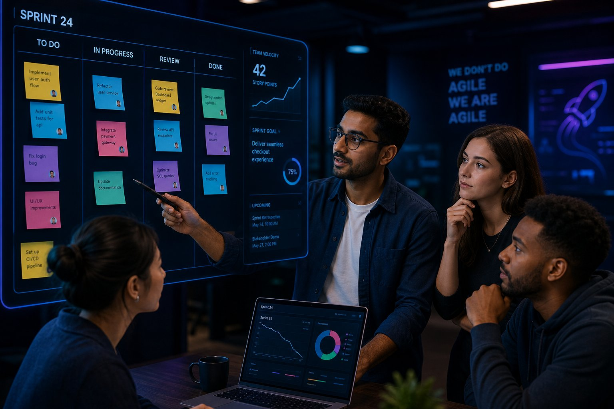
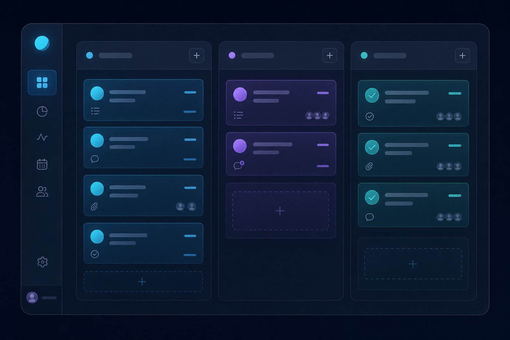

Rol 1
Product Owner
- Define y comunica el valor del producto.
- Gestiona y prioriza el Product Backlog.
- Representa las necesidades de los interesados.
Cómo el marco de trabajo SCRUM organiza la colaboración y permite demostrar competencias reales de empleabilidad: comunicación, responsabilidad compartida, transparencia y mejora continua.
←→ navegar · Home/End inicio/fin · F pantalla completa

Dos formas distintas de organizar el trabajo: una centrada en la adaptación continua y otra en la planificación secuencial.
Idea clave: las metodologías ágiles priorizan la adaptación, la colaboración y la entrega continua de valor.
Un Scrum Team reúne tres responsabilidades complementarias, sin jerarquías internas y con un objetivo común.
El Scrum Team es multifuncional y autogestionado: nadie le indica desde fuera cómo convertir el Product Backlog en un incremento. El equipo se organiza internamente, distribuye tareas y coordina esfuerzos.
Selecciona una etapa del flujo para conocer su objetivo, participantes y su aporte al trabajo en equipo.
Todos los eventos aplican los pilares empíricos de SCRUM: transparencia, inspección y adaptación, y refuerzan la comunicación y la coordinación del equipo.
Cada práctica del marco genera evidencia observable de competencias valoradas en el entorno laboral.
El equipo trabaja hacia un objetivo común y asume en conjunto la responsabilidad sobre el resultado del Sprint.
La interacción frecuente permite expresar avances, problemas y necesidades de forma clara, breve y respetuosa.
El estado del trabajo es visible (backlog, tablero, incremento), lo que facilita la inspección y la toma de decisiones.
Los integrantes coordinan esfuerzos, se apoyan entre sí y ajustan el plan diario para alcanzar el Objetivo del Sprint.
El equipo responde a cambios y a nueva información sin perder el foco en el valor que debe entregar.
La retrospectiva identifica oportunidades concretas de mejora y compromisos aplicables al siguiente Sprint.

SCRUM no solo organiza el trabajo: también permite evidenciar competencias profesionales esenciales para la empleabilidad.
Síntesis de los aprendizajes y fuentes consultadas para la elaboración de la presentación.
SCRUM fomenta la colaboración: los eventos y los roles obligan a interactuar de forma continua hacia un objetivo común.
La comunicación es fundamental: el Daily y la Review mantienen alineado al equipo y a los interesados.
La autogestión desarrolla responsabilidad y autonomía, competencias muy valoradas en el entorno laboral.
La transparencia facilita la coordinación y permite decisiones basadas en información real.
La mejora continua fortalece el desempeño y hace que estas competencias sean transferibles a cualquier empleo.
Formato APA (7.ª edición)
Grupo 5 · Empleabilidad y Desarrollo Personal · VALERIO LOPEZ JARED PETER · ROJAS CORONADO LUZ DANIELA · CARLOS ROJAS LETICIA IVETT